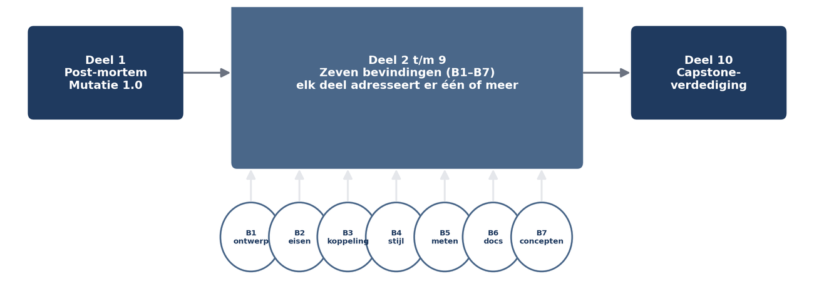

De casus: Mutatie 1.0
⏱ 15 minWaarom deze cursus begint met een mislukking
Er zijn twee manieren om een cursus softwarearchitectuur te beginnen. De eerste is met een definitie: u leert wat architectuur is, en werkt daarna naar de praktijk toe. De tweede is met een systeem dat niet werkt: u ziet wat er misgaat, en werkt daarna naar de begrippen toe die verklaren waarom.
Wij kiezen de tweede route, om één reden. Architectuur is bij uitstek een vak waarin de kosten van slechte keuzes pas maanden later zichtbaar worden. Wie het vak leert zonder die kosten ooit gezien te hebben, leert een verzameling patronen en diagrammen zonder gevoel voor de vraag waar ze voor dienen. Het gevolg is de architect die alles kent en niets kiest.

De casus
Meridiaan Pensioen is een middelgrote Nederlandse pensioenuitvoerder: elf werkgevers, ongeveer 340.000 deelnemers, 600 medewerkers. Het Programma Mutatieplatform moet alle deelnemersmutaties — adreswijzigingen, scheidingen, overlijdens, waardeoverdrachten — via één platform laten lopen met één statusbeeld en een audittrail die de toezichthouder kan volgen.
In het najaar van 2024 besloot Meridiaan tot maatwerk bij een extern ontwikkelbedrijf, negen maanden, 2,1 miljoen euro. Er werd geen architect benoemd; de aanbesteding noemde architectuur als verantwoordelijkheid van de leverancier, die dat invulde met "onze senior engineers doen dat".
Na veertien maanden en 3,4 miljoen euro is het programma gepauzeerd. Scheidingen en overlijdens zijn nooit gebouwd. De doorlooptijd van een adresmutatie is 6 seconden bij één gebruiker en 90 seconden bij vijftig gelijktijdige gebruikers. Eén wijziging, in maand elf, kostte vijf weken en brak drie andere functies.
De directie liet een externe post-mortem uitvoeren. Die post-mortem is het startmateriaal van dit hele niveau.